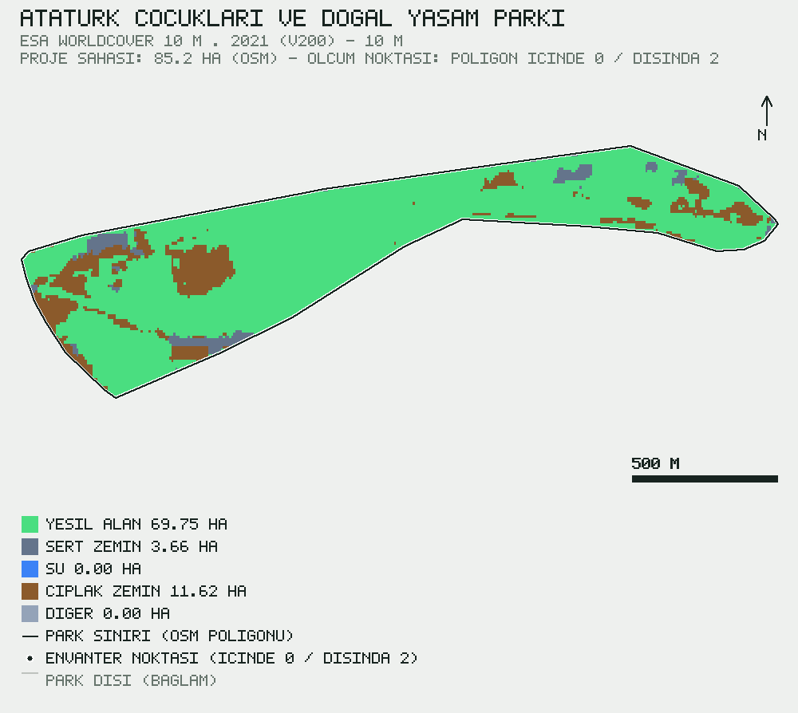

Bu rapor, Atatürk Çocukları ve Doğal Yaşam Parkı sınırları içerisinde gerçekleştirilen 2 bireysel ağaç ölçümüne (göğüs çapı, boy, tür, GNSS konumu ve fotoğraf kanıtı) dayalı toplam karbon stokunu, %95 güven aralığı ve bağımsız doğrulama izleri ile birlikte sunmaktadır. Toplam karbon stoku 24.02 t [%95 GA: 13.17–34.22] olarak hesaplanmış; hektara karşılığı 0,282 t/ha olarak bulunmuştur. Bütün kayıtlar moderatör onayından geçirilmiştir; park poligonu konum çiti denetiminin kayıt düzeyindeki sonucu §5'te raporlanmıştır.
2.1 Saha protokolü. Göğüs çapı (DBH) yerden 1.30 m yükseklikte şeritmetre ile (±0.5 cm), ağaç boyu lazer hipsometre ile (±0.25 m), konum sivil GNSS alıcısıyla (ortalama ±8,9 m) ölçülmüş; her kayıt için sahada çekilmiş fotoğraf kanıtı zorunlu tutulmuştur. Ayrıntılı uygulama kuralları DendroGeo Saha Protokolü v1'de tanımlıdır.
2.2 Biyokütle ve karbon. Toprak üstü biyokütle (AGB), Chave ve ark. (2014) pantropikal allometrik denklemiyle hesaplanmıştır: AGB = 0.0673·(ρ·D²·H)^0.976; burada ρ odun yoğunluğu (g/cm³), D göğüs çapı (cm), H ağaç boyu (m). Toprak altı biyokütle (kök biyokütlesi) AGB×0.26, karbon stoku ise toplam biyokütlenin 0.47 katsayısı ile çarpımı olarak tanımlanmıştır. Tür yoğunluğu bulunmadığında grup varsayılanı (iğne yapraklı / geniş yapraklı) kullanılmış ve Çizelge 1'de beyan edilmiştir.
2.3 Belirsizlik. Girdi belirsizlikleri (§2.1) ve allometrik model belirsizliği (%22 değişim katsayısı) Monte Carlo yöntemiyle (n=1000, sabit tohum=20260926) yayılmıştır; model hatası kayıtlar arasında korele kabul edilmiştir, zira aynı denklem tüm kayıtlarda ortak yönde sapma üretir. Güven aralığı, örneklem dağılımının 2.5 ve 97.5 yüzdebirlikleri olarak raporlanmıştır.
2.4 Doğrulama zinciri. (i) Her kayıt moderatör onayı gerektirir (2/2 kayıt 'Onaylı' durumundadır; zaman damgalı onay kaydı 0/2); (ii) ölçüm konumunun park poligonu içinde olması veritabanı tetiği ile zorunlu kılınmıştır (trg_geo_fence; zorunluluk, 0007 geçişinden sonraki kayıtlara uygulanır, önceki kayıtlar için kayıt düzeyindeki denetim sonucu §5'te beyan edilir); (iii) arazi örtüsü çözümlemesinde raster/park alan farkı %0.5 eşiğini aşarsa sonuç yayınlanmaz.
Çizelge 1 tür bazlı özet istatistikleri, Şekil 1 ise karbon paylarının dağılımını vermektedir.
| Tür | Grup | n | Ort. DBH (cm) | Ort. boy (m) | Karbon (kg) | Pay |
|---|---|---|---|---|---|---|
| SERVİ | İBRELİ | 1 | 50,0 | 4,0 | 145,3 | %0,6 |
| ÇINAR | YAPRAKLI | 1 | 320,0 | 15,0 | 23.878,2 | %99,4 |
Park poligonu, ESA WorldCover 10 m · 2021 (v200) ürününün 10 m çözünürlüklü kategorik rasteriyle tam poligon–hücre kesişimi yöntemiyle işlenmiş; raster/park alan farkı %0,197 olarak doğrulanmıştır. Sınıf alanları Çizelge 2'de, mekânsal dağılım Şekil 2'de sunulmuştur. Şekil 2'de park sahasının tamamı kapalı poligon olarak gösterilir; koyu çizgi park sınırını (OSM poligonu), siyah noktalar envanter ölçüm noktalarını belirtir. Bağımsız çapraz kaynak (IO LULC 10 m · 2020 (çapraz doğrulama)) ile grup bazlı uzlaşma: green %57, water %100, hard %12, bare %0, other %100.
| Sınıf | Alan (ha) | Pay |
|---|---|---|
| Yeşil alan | 69,75 | %82,0 |
| Su | 0,00 | %0,0 |
| Sert zemin | 3,66 | %4,3 |
| Çıplak zemin | 11,62 | %13,7 |
| Diğer | 0,00 | %0,0 |

DGR-2026-0001 · sürüm 1 · yayın 2026-09-27sha256:12ff8e8ba1a14cbd720368b960abf7f6952fd0f41927a327256f6855e74ab106Ham veriler CC BY-NC 4.0 lisansı ile açıktır; yeniden kullanımda §7 künyesine atıf zorunludur.
10.1111/gcb.12629 · ESA WorldCover 10 m 2021 v200, CC BY 4.0 · OpenStreetMap katkıcıları (ODbL).@techreport{dgr20260001,
author = {Şirin, Nagihan and Şirin, Sinan},
title = {Atatürk Çocukları ve Doğal Yaşam Parkı ağaç envanteri ve karbon stoku raporu},
year = {2026},
number = {DGR-2026-0001},
version = {1},
publisher = {DendroGeo},
url = {https://dendrogeo.org/rapor/DGR-2026-0001/},
note = {sha256:12ff8e8ba1a14cbd…}
}